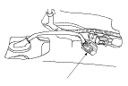
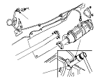

Secondary HO2S Replacement
Special Tools Required
O2 sensor wrench
 07LAA-PT50101
Disconnect the secondary HO2S connector (A).
Remove the TWC:
K20A6 engine
K24A3 engine

Remove the secondary HO2S (A).
Install the secondary HO2S in the reverse order of removal.
